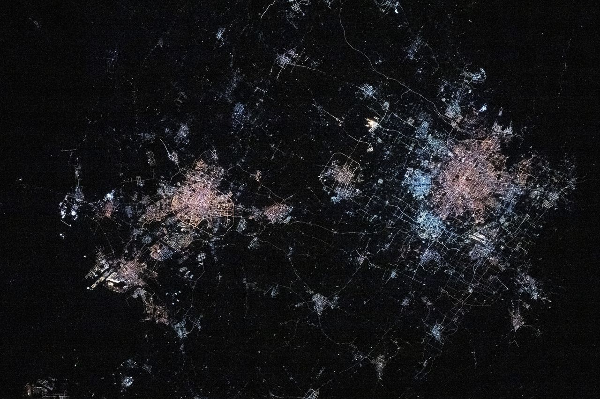
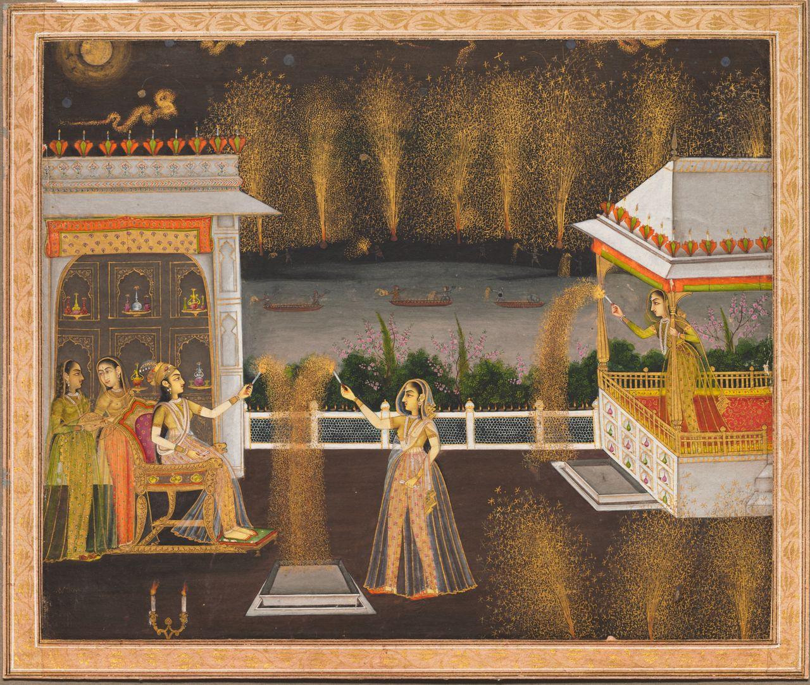
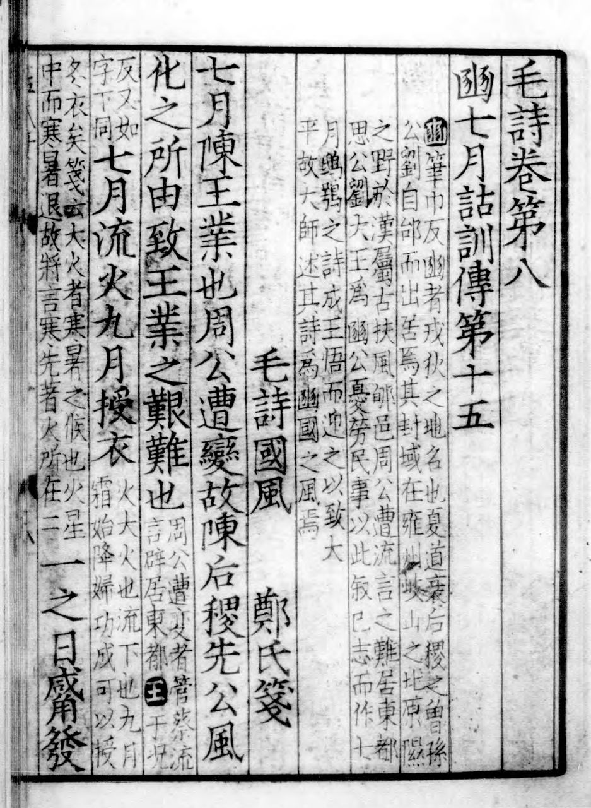
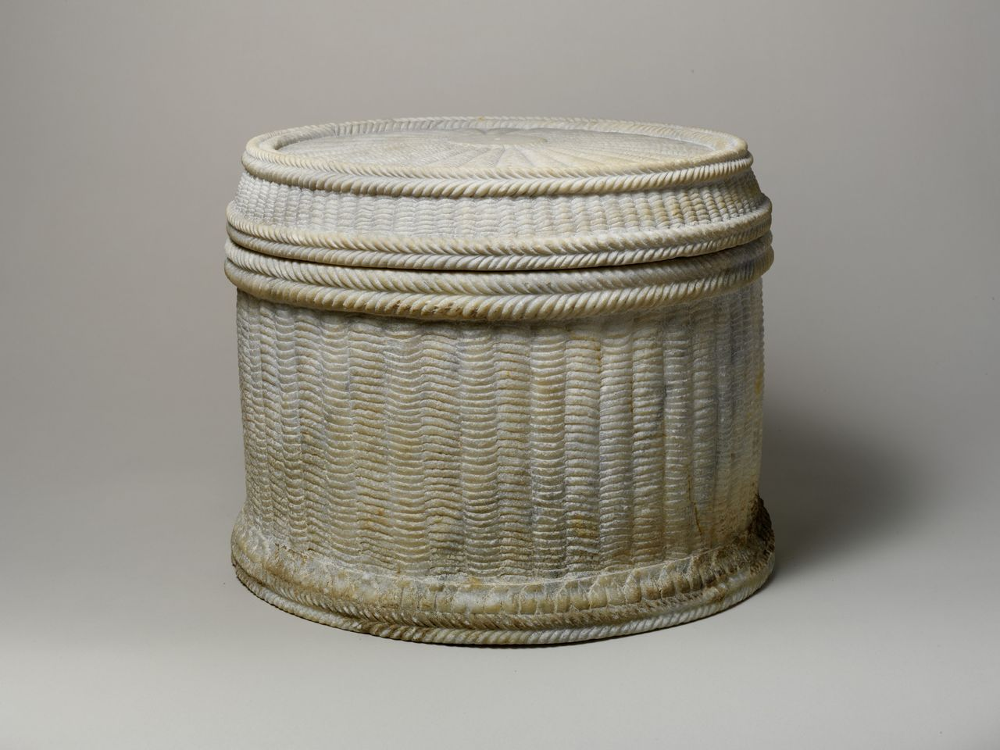
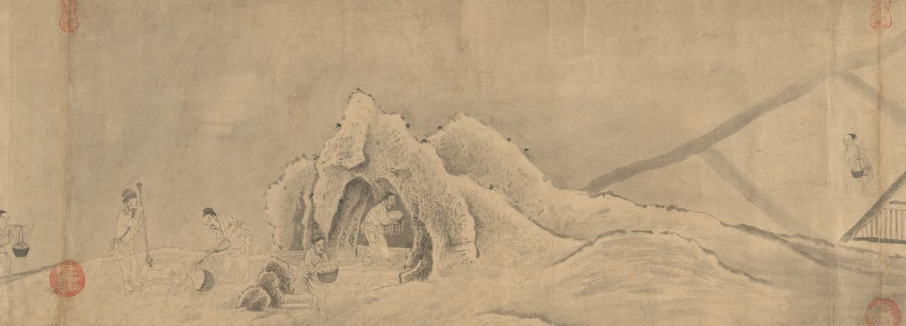
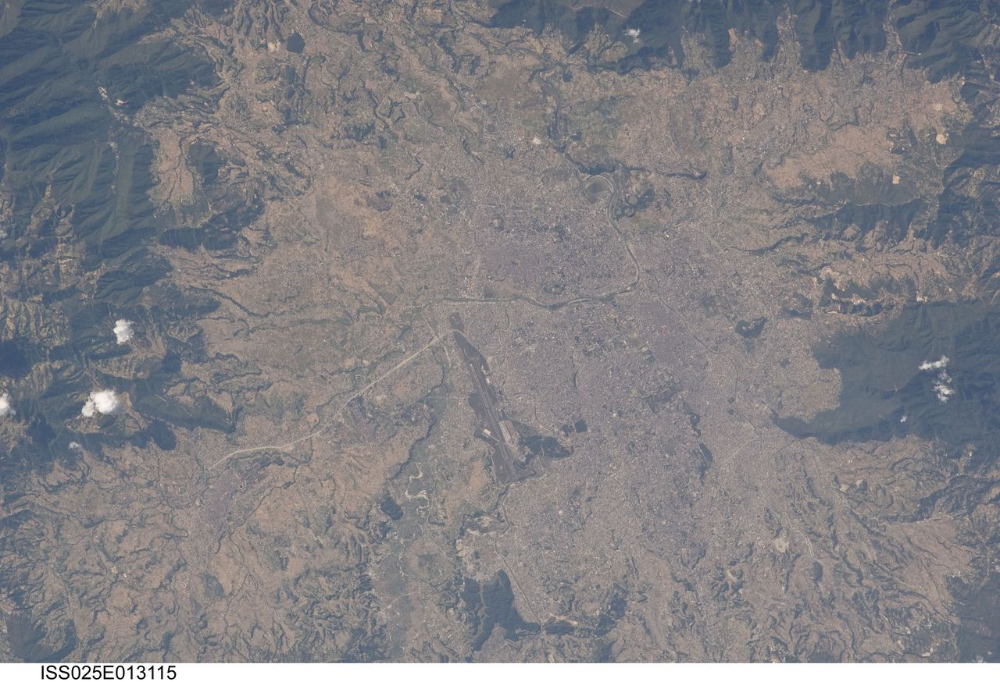

01 / 0810 月 31 日 · 周六万圣节 · Samhain · 亡灵节前夜
灯从最北边点起
都柏林这天白昼只有九个半小时多一点，夏末（Samhain）与冬天在这里交接：牲口 5 月初赶上夏牧场、11 月初赶回圈。纽约的万圣节是同一个日子搬过大西洋后的样子，门槛从霜期变成了货架期；墨西哥城下午两点，亡灵节大游行从改革大道走向宪法广场；悉尼则在仲春过节，昼长十三小时。

从北纬 53 度的 Samhain 到北纬 17 度的水灯节——万圣节、亡灵节、篝火夜、立冬、排灯节、寒衣节落在同十天里；收成、季风、霜期与历法怎样决定它们的同与异。附「纬度与门槛」「算日子」小工具。
节日跟着收成走，收成跟着气候走，气候跟着纬度和地形走。十天里七个节日——万圣节、诸圣诸灵、亡灵节、篝火夜、立冬、排灯节、寒衣节——都落在「一年的门槛」上：收成入仓、牲口回圈、雨季结束、白昼变短。人们在门槛上做同样的三件事：请亡灵回家吃一顿，把夜点亮，把过冬的衣食备好。可它们落在不同的日子、用着不同的东西——那一半来自纬度与气候，另一半来自历法与传播。
上线当天是万圣节，十天里七个节日接力：地图上的灯一盏一盏点起来，每一盏旁边写着那座城那天的昼长。
都柏林这天白昼只有九个半小时多一点，夏末（Samhain）与冬天在这里交接：牲口 5 月初赶上夏牧场、11 月初赶回圈。纽约的万圣节是同一个日子搬过大西洋后的样子，门槛从霜期变成了货架期；墨西哥城下午两点，亡灵节大游行从改革大道走向宪法广场；悉尼则在仲春过节，昼长十三小时。
教会日历把众圣与众亡者放在 11 月初，日子钉死，气候各走各的：罗马是秋雨季与橄榄采收，墨西哥高原是雨季刚停、玉米收完、万寿菊正开，拉巴斯却在南半球的春天——旱季转雨季，马铃薯随雨播种，亡魂回家被理解为「把雨带回来」。
11 月 2 日是成人的亡灵日。墨西哥的 ofrenda 摆亡灵面包、糖骷髅、万寿菊与蜡烛；玻利维亚高原的 apxata 祭桌铺黑布、架甘蔗、摆面包人 t'anta wawa；欧洲的墓地点满烛光。请亡灵回家吃一顿，这件事在三块大陆上用三套东西做。

英格兰南岸的刘易斯这天日落四点半。篝火夜的日子来自 1605 年的火药阴谋和 1606 年的议会法案，与农事无关；可它长在和 Samhain 篝火同一个季节里——收成已毕、秸秆枯枝可烧、牧草停长。史家说两者没有承接关系，这正是「同季节未必同来源」的例子。

太阳黄经 225°，北京时间 17:52 立冬。这个时刻在天文学上就是凯尔特的「跨季日」——Samhain 的天文定义；中国把它钉在黄河流域的物候上：「水始冰，地始冻」，北京常年 10 月 30–31 日入冬，11 月 8 日第一次跌破冰点。加德满都这天开始五天的 Tihar，先谢乌鸦。

印度气象局常年口径：西南季风 9 月 25 日撤出德里，10 月 15 日撤出全国；排灯节钉在之后的迦底迦月朔——今年就是撤退后的第一个新月，kharif 稻谷正在收。amavasya 从 8 日中午起、到 9 日 12:32（印度时间）的朔为止：8 日日落时正当值、9 日日落前已过，所以 11 月 8 日点灯。加德满都同一晚祭吉祥天女，「女神不进暗屋」。

北京时间 15:02 朔，按《农历的编算和颁行》，含朔时刻的那一天为初一，这天是十月初一——印度按日落时的 tithi 在前一天点灯，中国按含朔之日在这天送寒衣，同一个天象差出一天。十月朔在秦与汉初做过一百多年的岁首；《诗经》说「九月授衣」，宋人这天出城上坟，明人在门口焚化纸衣。

11 月 11 日乌得勒支的孩子提灯笼讨糖、德国人吃圣马丁鹅；11 月 15 日东京的七五三；11 月 23 日新尝祭与下元节；11 月 24 日素可泰的满月夜放水灯，雨季刚停、河水最满；12 月 13 日斯德哥尔摩的圣露西亚，白昼只剩六小时——越往北、越近冬至，点灯的日子越晚。

底图：NASA「黑色弹珠」2016 年全球夜间灯光合成图（Suomi NPP / VIIRS，公有领域）。地图上的横带按当天各纬度的黑夜长短加深；城市的灯在有节的那天点亮。昼长与日出日落按太阳赤纬与均时差的标准近似算，取各城标准时、不含夏令时，误差在几分钟内。
四件正在发生的事，只当入口：墨西哥城的大游行、万圣节的生意、同一轮新月上的两个节、立冬与天文学上的 Samhain。
2016年起 · 第十届
从改革大道的狩猎女神雕像走到宪法广场。这条「传统」只有十年：2015 年 007《幽灵党》开场拍了一场虚构的亡灵节游行，次年市政府把它办成了真的；今年 6 月为世界杯还办过一场夏季版。亡灵节本身 2008 年列入人类非遗。
来源：UNESCO ICH：Indigenous festivity dedicated to the dead（00054）；INAH Lugares：Las fiestas indígenas dedicadas a los muertos；墨西哥城政府：Gran Desfile de Día de Muertos 2026；Expansión 2026-10-14：游行路线与 2016 首届
135亿美元 · 美国 2026 年预期（NRF）
美国零售联合会的年度调查：2025 年创纪录的 131 亿美元，2026 年预期 135 亿，49% 的人 9 月或更早就开始买。日子是爱尔兰的夏末，内容是北美的货架——「门槛」从霜期变成了货架期。
来源：NRF: Halloween Data and Trends（2026）；NRF press release, 2025-09-18: Halloween spending to reach record $13.1 billion
12:32印度时间 11/9 朔 · 北京时间 15:02
印度按日落时的 tithi：11 月 8 日傍晚 amavasya 当值，当晚点灯；中国按《农历的编算和颁行》以含朔时刻的那一天为初一：11 月 9 日是十月初一，送寒衣。同一个天象，两种数法，差出一天。
来源：印度人事与培训部（DoPT）办公备忘录 F.No.12/2/2023-JCA（2026-07-16）《Holidays to be observed in Central Government Offices during the year 2027》（印度邮政部转发件，cept.gov.in）：「During 2027, Diwali (Deepavali) falls on Friday, October 29, 2027 (Kartika 7)」；印度驻埃里温使馆《List of Holidays during 2026》：Diwali (Deepavali) November 08, Sunday；香港天文台 2026 年公历农历对照表
225°太阳黄经 · 秋分与冬至正中
立冬是太阳黄经 225° 的时刻，正好在秋分（180°）与冬至（270°）之间——天文学上的「跨季日」，也是 Samhain 被赋予的天文定义。中国把它钉在黄河流域的物候上：「水始冰，地始冻」，北京常年 11 月 8 日第一次跌破冰点。
来源：UNESCO ICH 名录页 00647；文汇报 2022-11-07 方云《立冬：万物收藏，养蓄待发》；当代中国「立冬次候：地始冻」（引《月令七十二候集解》《逸周书·时训解》）
二十一个节日的来历，按欧洲、东亚、南亚与东南亚、美洲四条泳道排在年轮上。先看每一个是怎么长出来的，再看它压在哪一道门槛上。
点年轮上的点跳到卡片；卡片滚过视口中线时年轮上的点一起亮。虚线边框的卡片是反例与对照。
Samhain / Samonios · 爱尔兰、苏格兰、马恩岛（盖尔语区）
它是整张图谱的「西端锚点」：北纬 53° 海洋性气候下，牲口回圈与夏冬接缝落在 11 月初，后来被诸圣节与万圣节叠上。

科利尼历（公元 1–2 世纪）SAMON 月 → 10 世纪《求婚于 Emer》列四季分点 Samhain 在爱尔兰语里字面是「夏末」。Kuno Meyer 1888 年译出的中世纪故事《求婚于 Emer》（Tochmarc Emire）里的注释说「一年旧分两段：夏自 Beltaine（5 月 1 日）起，冬自 Samuin 即夏末起」，并把 Samuin、Oimolc、Beltine、Brón Trogaill 四个分点并列。更早的物证是法国出土的高卢科利尼铜历（Coligny），其中一个月名 SAMON（SAMONIOS），第 17 日标注 TRINOX SAMONI（「萨蒙三夜」），学界多认为对应一个节期，但该历是否以此月为岁首并无定论。
萨温（Samhain）在爱尔兰语里就是「夏末」。10 世纪的故事《求婚于 Emer》给一年切成两半：夏从 5 月 1 日的 Beltaine 开始，冬从 Samhain 开始；早期爱尔兰法典的注释也说牲口 5 月初上夏牧场、11 月初赶回。所以这一天的实际内容是清点牲口、决定宰杀哪些过冬、储粮入仓——北纬 53° 的海洋性气候里，草停止生长、白昼缩到 9 小时多一点的时候。更早的高卢科利尼铜历里有一个 SAMONIOS 月，第 17 日标着「三夜」。至于「凯尔特新年」，那是 1901 年 John Rhys 从马恩岛晚期民俗推出来、Frazer 推广的解读；牛津的 Ronald Hutton 在《Stations of the Sun》里认为证据单薄。今天的万圣节篝火、面具、讨糖，哪些真能回溯到前基督教时代，学界并不乐观。
两说① 是否「凯尔特新年」：Rhys 1901、Frazer 以晚期民俗推断「是」；Hutton 1996（第 35 章）认为证据「flimsy」，「中世纪记录不能证明 11/1 是泛凯尔特大节」；Fimi 指出唯一的前基督教凯尔特历——科利尼历——似以夏季开头，重建尚无定论（Minard 2006）。② 词源：传统释为「夏末」（*semo-）；Delamarre、Matasović 另提「集会」（*samoni-）一说。③ 科利尼历 SAMONIOS 是否即 Samhain、是否岁首，学界并未定论。
来源：CELT, University College Cork: Tochmarc Emire（Kuno Meyer 译，Archaeological Review 1, 1888）；Ronald Hutton, The Stations of the Sun: A History of the Ritual Year in Britain, OUP 1996, ch. 35 'Samhain'；Dimitra Fimi (Cardiff / Glasgow), 'Samhain, Halloween and the Celtic New Year'；Wikipedia: Samhain
Sollemnitas Omnium Sanctorum / Commemoratio Omnium Fidelium Defunctorum · 罗马 → 拉丁教会全境
它是整个欧洲 11 月初「亡灵节」的历法骨架：日子由教会定死，气候各地各走各的。

609 年万神殿改献 → 731–741 年格里高利三世 → 835 / 837 年格里高利四世 → 998 年或 1030 年后奥迪洛定诸灵节 罗马原本在 5 月 13 日纪念众殉道者：609 年教宗博尼法斯四世把万神殿改献为「圣母与众殉道者」教堂（《教宗名录》Liber Pontificalis）。11 月 1 日的最早证据是教宗格里高利三世（731–741）在圣彼得大殿献了一座「诸圣」小堂；英格兰的阿尔昆 800 年已在 11/1 守此节。12 世纪根布卢的西吉贝尔《编年史》835 年条记：「在教宗格里高利（四世）的建议下、全体主教同意，皇帝路易（虔诚者）下令高卢与日耳曼在 11 月朔日守诸圣节」。诸灵节（11/2）由克吕尼修院院长奥迪洛为克吕尼系修院所定，传统系于 998 年。
罗马起初在 5 月 13 日纪念众殉道者——609 年教宗博尼法斯四世把万神殿改献为圣母与众殉道者教堂，用的就是这个日子。11 月 1 日的最早证据，是教宗格里高利三世（731–741 年在位）在圣彼得大殿献了一座「诸圣」小堂；英格兰的阿尔昆 800 年已在这天过节。真正把它推向整个西方教会的是 835 年（一说 837 年）：根布卢的西吉贝尔《编年史》记载，「在教宗格里高利的建议下、全体主教同意」，皇帝虔诚者路易下令高卢与日耳曼在 11 月朔日守诸圣节。第二天的诸灵节，则是克吕尼修院院长奥迪洛为克吕尼系修院定的，传统系于 998 年。从此西欧的「亡者之日」被钉在公历 11 月 1–2 日：罗马这时秋雨初来、橄榄正收，北海沿岸是草停牛归，安第斯高原却是春天——日子一样，门槛各异。
两说① 定 11/1 的教宗：一说格里高利三世（731–741）为圣彼得大殿诸圣小堂献堂（Britannica 称最早证据）；一说格里高利四世于 835 年（西吉贝尔《编年史》，路易皇帝敕令）或 837 年（Britannica）推行全教会。两说可并存：前者是罗马本地日期，后者是法兰克帝国推行。② 万神殿改献年份：609（Britannica）、610（通行）、607（Pearse 引《教宗名录》）。③ 奥迪洛定诸灵节：传统 998 年（Catholic Encyclopedia）；维基引 Löffler 称「大概不在 998 而在 1030 年后」。
来源：Britannica: All Saints' Day；Roger Pearse, 'All Saints: the edict of Louis in 835 establishing the date as 1st November'（引 Sigebert of Gembloux, Chronographia, ed. Bethmann, MGH SS 6, 1844）；Wikipedia: Odilo of Cluny（引 Catholic Encyclopedia 1911）；Medieval Histories: Soul Cakes and Souling（引 Mirk, Festial, ed. Powell 2009）
Halloween / Hallowe'en / Oíche Shamhna · 爱尔兰、苏格兰 → 北美 → 全球
它是「气候门槛」被移民与零售彻底置换的样本：爱尔兰的牲口季 → 北美的糖果季，日子不动，内容换光。

All Hallows' Eve（诸圣节前夜）→ 19 世纪爱尔兰 / 苏格兰移民 → 1917 / 1927 年加拿大报纸「trick or treat」→ 1950 年代以后的糖果与装饰生意 Halloween 是 All Hallows' Eve（诸圣节前夜）的缩写，即 10 月 31 日夜。爱尔兰人在这一夜把大头菜（turnip）挖空刻成鬼脸、放蜡烛吓人——爱尔兰国家博物馆藏有 1943 年从多尼戈尔郡 Fintown 收来的一盏，捐赠者说那是当地 1900 年前后一直在做的样子；博物馆明说「今天流行的南瓜是这一爱尔兰传统在美洲的发展」。19 世纪爱尔兰与苏格兰移民把这一夜带到北美。「trick or treat」的最早印刷记录在加拿大：不列颠哥伦比亚大学《加拿大语历史原则词典》（DCHP-3）把 1917 年安大略 Sault Ste. Marie 报纸的「tricks or treats」列为最早，1927 年阿尔伯塔 Blackie 的报道是今天这一固定说法的最早出处。
Halloween 是 All Hallows' Eve——诸圣节前夜——的缩写。在爱尔兰，这一夜的灯是挖空的大头菜：爱尔兰国家博物馆藏着 1943 年从多尼戈尔郡收来的一盏「鬼脸大头菜」，捐赠者说这是当地 1900 年前后一直在做的东西，博物馆也明说「今天流行的南瓜，是这一爱尔兰传统在美洲的发展」。19 世纪爱尔兰、苏格兰移民把这一夜带到北美。「trick or treat」的最早印刷记录在加拿大：UBC 的《加拿大语历史原则词典》把 1917 年安大略的「tricks or treats」列为最早，而 1927 年阿尔伯塔小镇 Blackie 的报道，是今天这个固定说法的第一次见报。此后它成了零售日历上的节日：美国零售联合会的调查说，2025 年美国人为万圣节花了创纪录的 131 亿美元，2026 年预计 135 亿、人均 115 美元，近一半的人 9 月就开始采购。纽约格林威治村的万圣节游行从 1974 年一群邻居孩子的巡游，长成主办方口径 5 万化装者、200 万观众的夜游。日子还是 10 月 31 日，门槛已经从初霜换成了货架。
两说① trick or treat 最早印刷记录：通行说法是 1927 年 11 月 4 日阿尔伯塔 Blackie《Lethbridge Herald》；CBC 2016 年报道引历史学家 Nicholas Rogers 称 1927 年 11 月 3 日《Blackie Times》；UBC 的 DCHP-3 词典则把 1917 年 11 月 1 日安大略 Sault Ste. Marie《Sault Daily Star》的「Tricks or treats」列为最早（变体），1924 年埃德蒙顿《Edmonton Bulletin》「Treat up—or tricks」，1927 年 Blackie 为「trick or treat」固定形式最早。② 村游行创办年：主办方与 NY1（2023 年「第 50 届」）口径为 1974 年；Baruch College NYCdata 作 1973 年。③ 游行路线：维基 / Time Out 作第六大道 Spring St → 16th St，Baruch 页作到 23rd St。
来源：NRF: Halloween Data and Trends（2026）；NRF press release, 2025-09-18: Halloween spending to reach record $13.1 billion；DCHP-3 (UBC): trick or treat；CBC News 2016: Albertans may have been 1st to say 'trick or treat'；City of Edmonton Archives: trick or treat；National Museum of Ireland: Ghost turnip (F1943.350)；Baruch College NYCdata: Halloween Parade；Wikipedia: New York's Village Halloween Parade
Bonfire Night / Guy Fawkes Night · 英格兰 → 英联邦部分地区
反例：一个由议会立法钉在 11 月 5 日的节日，却长在和 Samhain 篝火同一个「草停夜长」的季节里——它说明「同季节」未必「同来源」。
1605 年 11 月 5 日火药阴谋 → 1606 年《11 月 5 日纪念法》→ 1859 年废止 1605 年 11 月 5 日，Guy Fawkes 在上议院地窖看守火药时被捕。次年 1 月议会提出、5 月 27 日御准《11 月 5 日纪念法》（Observance of 5th November Act 1605，3 Jas. 1 c. 1，1606 年 5 月 27 日御准），要求各教堂每年这天晨祷感恩、宣读法案，人人到场。这部法律在 1859 年 3 月 25 日被《纪念日纪念法》（Anniversary Days Observance Act 1859，22 Vict. c. 2）废止，但民间篝火与焰火延续至今。苏塞克斯的刘易斯（Lewes）是最大的一处：它同时纪念 1555–1557 年玛丽一世治下在镇上被烧死的 17 名新教徒，游行里抬 17 支燃烧的十字架。
1605 年 11 月 5 日，Guy Fawkes 在上议院地窖看守火药时被捕。次年 1 月议会提出、5 月御准《11 月 5 日纪念法》：全国教堂每年这天晨祷感恩、宣读法案、人人到场。这部法律一直用到 1859 年才废止，但篝火和焰火早已不靠法律活着。苏塞克斯小镇刘易斯是最大的一处：七个篝火会抬着 17 支燃烧的十字架游行，纪念 1555–1557 年在镇上被烧死的 17 名新教徒，再把点着的柏油桶滚下街道、扔进乌斯河——这套做法是 19 世纪中叶几次与治安官冲突之后定型的。它与萨温节篝火的关系，学界两派：Frazer 说这是「旧俗换了新形态」；Cressy 和 Hutton 则认为英格兰的 11 月 5 日篝火与威尔士、马恩岛、苏格兰的万圣节篝火「没有任何联系」。同一个草停夜长的季节，未必是同一个来源。
两说① 与 Samhain / 万圣节篝火的关系：Frazer 称之为「旧俗以新形态复现」，Underdown 视为万圣节的替代；Cressy（1992）称除国王得救外的来源说法是「speculative nonsense」，Hutton（Stations of the Sun）认为北威尔士、马恩岛、苏格兰中部的万圣节篝火与英格兰 11/5 篝火之间无任何联系。② 刘易斯篝火会成立年：History (UK) 作 1853；维基「Sussex Bonfire Societies」只说 1846 年冲突后、1850 年新会成立。③ 法案通过年：称「1605 年法」是按当时以 3 月 25 日为岁首的旧历，实际 1606 年 1 月提出、5 月御准。
来源：Wikipedia: Observance of 5th November Act 1605（引 Statutes at Large IV, 1811）；Wikipedia: Guy Fawkes Night（引 Cressy 1992、Hutton 1996/2001、Cannadine）；Susan Longfield Karr, 'Powder Treason, Bonfire Night, and the English Art of Reinventing the Past', Origins (Ohio State University), Oct 2025；History (UK): Lewes and the Sussex bonfire season；Wikipedia: Sussex Bonfire Societies（引 Lewes Bonfire Council）
Sint-Maarten / Martinstag / Saint-Martin · 荷兰、比利时、德国、法国、北欧部分地区
它把「牲口回圈」往后推了 10 天、往东推到北海对岸：同一个纬度带上，宰鹅、结账、点灯的农事年终点。

图尔的圣马丁（397 年卒）→ 11/11 下葬日 → 低地国家、德国的灯笼与鹅 圣马丁是 4 世纪图尔主教，传说他在亚眠城门把斗篷割半给乞丐；397 年去世，11 月 11 日是他的下葬纪念日。在荷兰、比利时、德国西部，这一晚孩子提着自制灯笼挨户唱歌讨糖（RTL Nieuws 的市镇调查发现它在天主教地区反而少见、北布拉班特仍偏宗教性；Meertens 研究所的民族学家 Irene Stengs 说它已成为一个世俗化的、越来越流行的节日）；乌得勒支近几十年发展出灯光雕塑游行，芬洛的游行以篝火收尾。德国有 Martinsgans（圣马丁鹅）的晚餐。在农事年里，11/11 是夏季工结束、雇工合同续签、牲口宰杀腌制的时点。
11 月 11 日是图尔主教圣马丁（397 年卒）的纪念日。在荷兰、比利时和德国西部，这一晚孩子提着自制的灯笼挨家唱歌讨糖；乌得勒支近几十年发展出灯光雕塑的游行，芬洛的游行以篝火收尾，德国人则吃圣马丁鹅。荷兰 Meertens 研究所的民族学家说，这个节近年在新教为主的北部和中部越来越流行。在农事年里它是结账日：比利时的市政文件写着，11 月 11 日「家仆与农场长工的合同续签」；苏格兰法律把 Martinmas 与 Whitsunday 并列为两个 term day，是租约与雇佣的法定起止点——1990 年的法案才把它改到 11 月 28 日。北纬 52° 的海洋性气候里，这正是牧草停长、牲口只能靠干草过冬的时候，所以也是宰杀腌制的季节。连法国博若莱新酒的上市日，也原定在 11 月 15 日，1985 年才改成 11 月第三个周四。
两说佃租日：比利时 Herk-de-Stad 文件说佃租在 11/30 圣安德烈日交、11/11 只是雇工续约日；苏格兰法律把 Martinmas 作租约 term day（1990 年前为 11/11，之后 11/28）。各地口径不同，11/11 并非普遍的交租日。
来源：NL Times 2025-11-11: Sint Maarten increasingly popular（引 Meertens Instituut Irene Stengs、RTL Nieuws 市镇调查）；Gemeente Herk-de-Stad (BE): 'Sinte-Matte en Herrek'；legislation.gov.uk: Term and Quarter Days (Scotland) Act 1990, s.1；Decanter: International Beaujolais Nouveau Day（1951 / 1985 INAO）
Luciadagen / Sankta Lucia · 瑞典、挪威、丹麦、芬兰（瑞典语区）
纬度阶梯的北端：北纬 59°，光的节日落在 12 月 13 日。
13 世纪前后圣露西亚纪念日 → 1764 年西瑞典庄园的最早记录 → 1928 年斯德哥尔摩报纸选 Lucia 北欧博物馆（Nordiska museet）的说法：在瑞典的天主教日历里，12 月 13 日是圣露西亚的纪念日（她的殉道日），16 世纪宗教改革后仍留着；这一夜在民间叫「Lusse 长夜」，被视为危险与超自然生灵出没的夜晚。最早的 Lucia 记录是 1764 年西瑞典 Horn 庄园；头戴灯烛的白衣 Lucia 最早见于 1820 年代西曼兰 Skinnskatteberg 庄园的一名雇工；1928 年《Stockholms Dagblad》办 Lucia 选美，获胜者头戴电灯烛冠游行，从此成为全国节目。这种面包 19 世纪末才开始加藏红花（源自荷兰的 duivekater），与 12 月 13 日绑定后才改叫 lussekatter——馆方未给出年代。
斯德哥尔摩北纬 59°，12 月 13 日白昼只有六小时上下。这一天是圣露西亚的纪念日——北欧博物馆说，它在瑞典天主教日历里一直是 12 月 13 日，宗教改革后民间仍把这一夜叫「Lusse 长夜」，视为超自然生灵出没的夜晚。白衣、烛冠的 Lucia 其实很新：最早的记录是 1764 年西瑞典的一处庄园，头戴灯烛的形象见于 1820 年代，而 1928 年斯德哥尔摩一家报纸办了 Lucia 选美，获胜者戴着电灯烛冠游行，这才成了全国的节目。把它放进这张图谱，是因为它是「越往北、光的节日越晚」那条纬度阶梯的最北一级：都柏林 10 月底，低地国家 11 月 11 日，瑞典 12 月 13 日。
两说「12 月 13 日曾是儒略历下的一年最长夜」是常见说法（瑞典对外机构常引），Nordiska museet 页面未作此说，只把它写成圣人纪念日与民俗「Lusse 长夜」；报纸选美年份 Nordiska museet 作 1928，通行作 1927。
Parentalia / Lemuria · 古罗马
反例：同一座城（罗马）本地的亡灵节在 2 月与 5 月，说明 11 月的日子是教会后来定的，不是地中海气候长出来的。

奥维德《岁时记》（公元 8 年前后） 古罗马自己的「亡者之日」不在 11 月：Parentalia 从 2 月 13 日到 21 日的 Feralia 共九天，家人到墓前献花环、麦粒、盐、浸酒的面包和紫罗兰（奥维德《岁时记》卷二 533 行起），期间神庙关门、不办婚礼、官员不佩徽章；22 日 Caristia 家族聚餐。5 月 9、11、13 日的 Lemuria 则是家长夜里撒黑豆、驱逐无主游魂。11 月初在罗马历里没有亡灵节。
罗马人自己的亡灵节不在秋末。奥维德《岁时记》写得很细：2 月 13 日到 21 日的 Parentalia，家人到墓前放花环、麦粒、盐、浸过酒的面包和紫罗兰，这九天神庙关门、不办婚事、官员不佩徽章；21 日 Feralia 收尾，22 日 Caristia 全家聚餐。5 月 9、11、13 日的 Lemuria，一家之主半夜赤脚撒黑豆、驱走无主的游魂。这两个日子一个在冬雨季末、春播之前（罗马旧历以 3 月为岁首，2 月正是年终月），一个在麦收之前——都与「秋末」无关。所以后来欧洲 11 月 1–2 日的诸圣、诸灵，是教会定下的日期（8–9 世纪由罗马教宗与法兰克皇帝定诸圣，10–11 世纪由克吕尼修院推开诸灵），不是地中海气候自己长出来的门槛。
两说Lemuria 5/13 与万神殿 5/13 改献是否有意承接，仅为部分作者推测，无一手证据。
来源：Wikipedia: Parentalia（引 Ovid, Fasti II）；Medieval Histories: Soul Cakes and Souling（引 Ovid, Fasti 2, Theoi 译本）
颛顼历 · 十月朔朝贺 · 秦 → 汉初（前 221 – 前 104）
它证明「年的接缝」在中国也曾落在孟冬之初——寒衣节的日子一度是元旦。

前 221 年（始皇二十六年）→ 前 104 年（太初元年） 《史记·秦始皇本纪》记始皇二十六年并天下后推五德终始，「方今水德之始，改年始，朝贺皆自十月朔」。《汉书·律历志》说汉兴「袭秦正朔」，用张苍所议的颛顼历；至武帝元封七年改为太初元年，「夏五月，正历，以正月为岁首」。于是十月朔从岁首退回为普通的月首，而岁首前后祭祖、授衣、朝贺的时序感留在了十月初一。
秦始皇二十六年并天下，「改年始，朝贺皆自十月朔」：一年从十月初一开始，百官在这一天朝贺。秦不改月序，十月仍叫十月，只是把年的接缝放在孟冬之初——此时关中秋收已毕、初霜已降。汉朝建立后「袭秦正朔」，用颛顼历，直到汉武帝太初元年（前 104）「正历，以正月为岁首」，十月朔才退回为一个普通的月首。前后约一百二十年里，十月初一是中国的元旦；后世寒衣节落在同一天，祭祖、授衣、暖炉会的时序感，与这段「岁首」的记忆重叠。
两说十月岁首始于何时有两说：① 传统读法以《史记·秦始皇本纪》始皇二十六年「改年始」为起点（并以水德五德终始为动机）；② 李开元（《刺秦》，《读书》2025 年第 3 期）认为「秦用水德说」不可信，秦自昭襄王以来即用颛顼历、以十月为岁首，统一后只是推行全国；辛德勇（澎湃 2022）亦讨论「秦以十月为岁首的开始时间」早于统一，并引阎若璩「秦不改月数」说，即秦只改岁首、不改月序（十月仍叫十月，正月仍叫正月）。两说都同意：汉初沿用，太初元年（前 104）改为正月岁首。
来源：《史记·秦始皇本纪》始皇二十六年条（原文经李开元、辛德勇两篇学术文章转引核对；ctext 页面反爬未能直接打开）；《汉书》卷二十一 律历志 · 维基文库；《汉书》卷六 武帝纪 · 维基文库；李开元《秦用水德说：一个不可信的历史故事》爱思想；辛德勇《秦以十月为岁首的开始时间（中）》澎湃新闻
寒衣节 · 十月朝 · 祭祖节 · 华北（北京、西安）→ 全国汉地
它是这十天里唯一跟着月亮走、又曾做过岁首的亡灵节——中国版的「年的接缝」。

《诗经·七月》「九月授衣」→ 秦汉十月朔岁首 → 宋《东京梦华录》十月一日 → 明《帝京景物略》送寒衣 寒衣节是把「授衣」和「祭祖」合在孟冬第一天的节日。《诗经·豳风·七月》已有「九月授衣」，《礼记·月令》说孟冬「天子始裘」、「腊先祖五祀」。秦与汉初以十月朔为岁首，这一天朝贺、换岁。北宋开封，十月一日「宰臣已下受衣著锦袄三日，士庶皆出城飨坟」，官府进暖炉炭，民间置酒作「暖炉会」。到明代北京，纸店裁五色纸做成尺把长的纸衣，写上先人名字辈分「如寄书然」，夜里在门口呼名焚化，「曰送寒衣」。清《帝京岁时纪胜》（1758）说十月朔祭祖扫墓「如中元仪」。
农历十月初一，旧称「十月一」或「十月朝」，今称寒衣节。《诗经·七月》「九月授衣」，《礼记·月令》孟冬「天子始裘」；秦并天下后「改年始，朝贺皆自十月朔」，这一天做过一百多年的元旦。北宋开封十月一日，宰相以下领冬衣、穿锦袄三天，士庶出城上坟，民间置酒办「暖炉会」。明代北京的纸店裁五色纸做成尺把长的纸衣，写上先人名字「如寄书然」，夜里在门口呼名焚化，叫「送寒衣」。它落在华北的门槛上：玉米入仓、冬麦出苗，北京常年 10 月 30 日前后入冬、11 月 8 日第一次跌破冰点。活人换冬衣的那天，顺手给死者也送一套。
两说① 节日起点：一说源于周代「授衣」与孟冬腊祭（经学口径：《诗经·七月》《礼记·月令》），一说宋代才把祭祖上坟定在十月一日（政务号「平定妇女」2024 等通行说法，无原典出处）；现存最早记十月朔节俗的是梁·宗懔《荆楚岁时记》「十月朔日，黍臛，俗谓之秦岁首」；明确写出「受衣」「出城飨坟」的是《东京梦华录》卷九（1147 年成书）。② 孟姜女传说与寒衣节的关系是民俗学上的后起附会：顾颉刚 1925 年已指出「送寒衣」是孟姜女故事各版本共有的情节之一，中国非遗网「孟姜女传说」页称故事重心自唐五代由哭崩长城转向送寒衣——传说解释节日，不是节日的来源。③ 「三大鬼节」（清明、中元、寒衣）是今人通行说法，未见于古籍；清《帝京岁时纪胜》只说十月朔祭祖「如中元仪」。
来源：《诗经·豳风·七月》ctext.org；《礼记·月令》ctext.org；《史记·秦始皇本纪》（李开元文转引）；《汉书·武帝纪》《汉书·律历志》维基文库；《东京梦华录》卷八（维基文库，中元条）与卷九「暖炉会」句（工商时报转引）；《帝京景物略》《帝京岁时纪胜》引文（看中国 2024-11-01 转引，该页未标书名）；中国非物质文化遗产网「孟姜女传说」；顾颉刚《孟姜女故事研究的第二次开头》（1925，爱思想转载）
立冬 · 十月节 · 中国（二十四节气）
它是中国的「跨季日」：和 Samhain 同一个天文时刻，却钉在黄河流域的物候上。

《礼记·月令》「立冬之日迎冬于北郊」→ 元《月令七十二候集解》→ 2016 年二十四节气入选 UNESCO 非遗 立冬是二十四节气的第十九个，太阳到达黄经 225°，在秋分与冬至正中——天文学上与凯尔特 Samhain 的「跨季日」是同一个时刻。《礼记·月令》写孟冬之月「水始冰，地始冻」，立冬前三天太史向天子禀告「某日立冬，盛德在水」，当天天子亲率三公九卿到北郊迎冬，这个月「天子始裘」，并宣布「天气上腾，地气下降，天地不通，闭塞而成冬」。元代吴澄《月令七十二候集解》把它解释为「立冬，十月节……冬，终也，万物收藏也」，三候是水始冰、地始冻、雉入大水为蜃。2016 年二十四节气以「中国人通过观察太阳周年运动而形成的时间知识体系及其实践」列入 UNESCO 人类非遗代表作名录。
11 月 7 日 17 时 52 分，太阳到达黄经 225°，秋分与冬至的正中，立冬。《礼记·月令》说孟冬「水始冰，地始冻」，立冬前三天太史禀告天子「某日立冬，盛德在水」，当天天子率三公九卿到北郊迎冬，宣布「天气上腾，地气下降，天地不通，闭塞而成冬」。元代吴澄解释：「冬，终也，万物收藏也。」这个门槛和华北的气候咬得很准：北京常年 10 月 30 日前后入冬，11 月 8 日第一次跌破冰点，「水始冰」几乎是观测事实。北方这天吃饺子；闽台「立冬补冬，补嘴空」，吃姜母鸭、麻油鸡。2016 年，二十四节气列入 UNESCO 人类非遗名录。
来源：UNESCO ICH 名录页 00647；文汇报 2022-11-07 方云《立冬：万物收藏，养蓄待发》；当代中国「立冬次候：地始冻」（引《月令七十二候集解》《逸周书·时训解》）；今周刊 2025-11-07《立冬吃什么？补冬怎么补？》；香港天文台 2026 年公历农历对照表；光明网 / 北京发布 2026-10-23（霜降黄经 210°、北京常年入冬）
下元节 · 十月十五 · 中国（道教三元）
它和寒衣节一起说明：中国把「十月」整个做成了冬初的祭亡月，望日和朔日各占一次。
东汉道教三官信仰 → 宋代三官配三元 道教奉祀天、地、水三神为「三官」，又称「三元」：上元正月十五天官赐福，中元七月十五地官赦罪，下元十月十五水官解厄。三官信仰可追溯到东汉五斗米道的「三官手书」（《三国志·张鲁传》裴注引《典略》），三官配上元、中元、下元三个望日在六朝道经中已见，唐开元年间三元日有断屠之敕，到宋代成为民间节日（非遗网条目作「至宋代，又将三官与三元联系起来」）。下元日道观修斋设醮，民间祭祖、烧「金银包」，福建莆田祭田头水神，北京做豆泥骨朵，宁化打糍粑。
农历十月十五下元节，是道教「三元」的第三个：正月十五上元天官赐福，七月十五中元地官赦罪，十月十五下元水官解厄。三官信仰可以追溯到东汉五斗米道给病人写的「三官手书」，分别上于天、埋于地、沉于水；到宋代，三官和三个望日对上了号。这一天道观设醮，民间祭祖、烧金银包，莆田人做麻腐包子，北京人做豆泥骨朵。它离立冬两周上下、紧邻小雪，华北已经入冬——十月的朔日送寒衣、望日祭水官，整个孟冬都是祭亡的月份。
来源：江晓雯《离我们渐行渐远的传统节日——下元节》中国非物质文化遗产网 2016-11-14；香港天文台 2026 年公历农历对照表（十月十五 = 11 月 23 日）
七五三（しちごさん） · 日本（关东起 → 全国）
同一个 11 月，中国给死者送衣，日本给活着的孩子穿衣谢神——「门槛」的两种过法。

江户前期（一说天和元年 1681）→ 明治以后普及全国 七五三把三种古老的成长礼合在一起：三岁「髪置」（停止剃发）、五岁「袴着」（男孩初穿袴，平安时代宫中仪式）、七岁「带解」（女孩改系大人宽带）。11 月 15 日的由来有两说：其一，天和元年（1681）11 月 15 日，五代将军德川纲吉为长子德松祈祷健康；其二，旧历十五是二十八宿的「鬼宿日」、百事皆吉，且旧历十一月收成已毕，趁望日向氏神谢收成并谢孩子平安。千岁饴（长条红白饴糖，寓长寿）是江户时代产物。原本只是江户及周边的仪式，明治以后普及到庶民与全国。
11 月 15 日的七五三，是日本给三岁、五岁、七岁孩子办的成长礼：三岁「髪置」不再剃发，五岁男孩初穿袴，七岁女孩改系大人的宽带，一家人穿和服去神社参拜，孩子手里提一袋红白长条的千岁饴。为什么是 11 月 15 日？一说天和元年（1681）这天五代将军德川纲吉为长子德松祈祷健康；另一说旧历十五是「鬼宿日」百事皆吉，又正值旧历十一月收成已毕，趁望日向氏神谢收成、谢孩子平安。换算公历，1681 年的那天是 12 月 24 日，冬至前后；改公历后钉在 11 月 15 日，比原本的时令早了一个多月。原只是江户一带的仪式，明治以后普及全国。
两说11 月 15 日的由来两说并列：① 天和元年（1681）德川纲吉为长子德松祈福（和樂web、下野市教委均作「一说」）；② 旧历十五为「鬼宿日」百事皆吉、兼旧历十一月收成后向氏神谢恩（下野市教委）；和樂web 另提「满月之日各地举行收获祭」。两处来源都写明「諸説あり」。和樂web 写「二十七宿の鬼宿日」，下野市写「二十八宿」，后者是通行写法。
来源：進藤つばら《七五三》和樂web（小学館）2025-03-25；下野市教育委员会文化财课《七五三と親の気持ち》（《新・下野市風土記》，《広報しもつけ》2022 年 11 月号）
新嘗祭（にいなめさい）· 勤労感謝の日 · 日本
它证明「收成门槛」可以被国家历法钉成固定日，名字换了、日子没换。

7 世纪后半制度化（天武・持统朝）→ 1873 年定 11 月 23 日 → 1948 年勤劳感谢日 新尝祭是天皇把当年新收的稻米做成神馔，供给皇祖天照大神等神明、自己也一同进食的「共食」之祭，在皇居神嘉殿夜间分「夕之仪」「晓之仪」两次举行。《日本书纪》神代卷的天岩户神话已写到天照大神为新尝而设的殿；作为国家祭祀制度化一般认为在 7 世纪后半天武・持统朝。原在旧历十一月第二个卯日；明治六年（1873）改太阳历，那年的二卯日恰是 23 日，此后固定为 11 月 23 日。1947 年皇室祭祀令废止，1948 年《国民的祝日に関する法律》把这一天定为「勤劳感谢日」：「勤労をたつとび、生産を祝い、国民たがいに感謝しあう」。
11 月 23 日，日本的「勤劳感谢日」，前身是宫中的新尝祭：天皇把当年新收的稻米做成神馔，夜里在皇居神嘉殿分「夕之仪」「晓之仪」两次供给皇祖天照大神，自己也一同进食。《日本书纪》神代卷的天岩户神话里，天照大神已有为新尝而设的殿；作为国家祭祀，一般认为在 7 世纪后半的天武、持统朝定型。它原在旧历十一月的第二个卯日，冬至前后；明治六年（1873）改用太阳历，那年的二卯日恰好是 23 日，从此钉死。1947 年皇室祭祀令废止，次年《国民的祝日法》把它改名「勤劳感谢日」——名字脱离了稻作，日子却一天没动。
来源：木村大樹（國學院大學研究開発推進機構）《「勤労感謝の日」とは？古代の天皇祭祀の視点からその起源と意味を理解する》マイナビキャリアリサーチLab 2025-10-09
दीपावली Dīpāvalī / Diwali / தீபாவளி Deepavali · 北印度（德里）、古吉拉特（艾哈迈达巴德）→ 全印度与尼泊尔 → 海外印裔社区
南亚最大的点灯节，钉在季风撤退后的迦底迦月朔上；2026 年它与中国寒衣节共用 11/9 这一轮朔，一个按日落、一个按含朔之日，差出一天。

7 世纪戒日王《龙喜记》「Dīpapratipadotsava」→ 7–10 世纪《莲花往世书》《室建陀往世书》→ 11 世纪比鲁尼记「迦底迦月新月日」 7 世纪戒日王的梵剧《龙喜记》已称它「灯·初一·节」，7–10 世纪的《莲花往世书》《室建陀往世书》记有灯祭，11 世纪比鲁尼写它在「迦底迦月新月之日」。主线是迎吉祥天女与罗摩归来（《罗摩衍那》传统）；耆那教同日纪念大雄涅槃，锡克教过 Bandi Chhor Divas，孟加拉改祭迦梨女神。
排灯节是五天：牛财节开场，那罗迦十四，第三天——迦底迦月的朔日——日落后在一年里最暗的夜点满油灯迎吉祥天女，第四天牛增山祭、古吉拉特人过维克拉姆历新年（新账本已在前一晚吉祥天女前开启），第五天兄妹节。落在哪一天看日落后 amavasya 是否当值，所以同一轮新月，印度 11 月 8 日点灯，中国 11 月 9 日过寒衣节。它钉在季风刚退的空档上：印度气象局常年口径，西南季风 9 月 25 日撤出德里、10 月 15 日撤出全国，2015 到 2027 年的排灯节都落在 10 月 19 日到 11 月 14 日之间——雨停、天晴、稻谷正收。
两说① 日期判定：当 amavasya 跨两日的 pradosh 时段，各历书取舍不同——2024 年 10/31 与 11/1、2025 年 10/20 与 10/21 都出现过两说，印度中央政府假日表取 10/31 与 10/20，Drik Panchang 同（2025 年 amavasya 10/20 15:44 起、10/21 17:54 止）；Dharmasindhu 的「两日皆含则取后一日」规则在实践里以 amavasya 是否覆盖足够长的 pradosh 为准。② 耆那教大雄涅槃纪年公元前 527 年学界存疑（Dundas 2002、Potter 2007）。③ Bandi Chhor Divas 的年份（1619 年）为通行说法，一手出处待核。
来源：印度人事与培训部（DoPT）办公备忘录 F.No.12/2/2023-JCA（2026-07-16）《Holidays to be observed in Central Government Offices during the year 2027》（印度邮政部转发件，cept.gov.in）：「During 2027, Diwali (Deepavali) falls on Friday, October 29, 2027 (Kartika 7)」；印度驻埃里温使馆《List of Holidays during 2026》：Diwali (Deepavali) November 08, Sunday；DoPT 办公备忘录 F.No.12/2/2023-JCA（2025-07-03）《Holidays ... during the year 2026》：Diwali (Deepavali) Sunday, November 08, 2026 (Kartika 17)（GConnect 转载）；印度气象局（IMD）新闻稿：西南季风登陆与撤退常年日期修订（2020 年，登陆用 1961–2019、撤退用 1971–2019 资料，2020-06-01 起启用）；Business Standard 2025-10-16：Southwest monsoon withdraws from India, northeast rains set in — IMD（撤完常年日 10/15；2025 年 10/16 撤完，同日东北季风在泰米尔纳德登场）；FAO GIEWS 印度国别简报（2026-02-13）：主季 kharif 稻约占年产八成、至 2026 年 1 月收完；kharif 玉米 11 月收；2025 年 6–9 月季风雨量平均至偏多；kharif 稻创纪录 1.875 亿吨；climate-zone.com Delhi（Köppen Cwa；1991–2020 年 Safdarjung 站常年值：10 月均温约 26 ℃、降水约 13 mm，11 月约 21 ℃、约 5 mm，年降水约 840 mm（IMD 常年表为 762.3 mm）；原始日值来自 NOAA 全球站网）；Wikipedia: List of cities by Köppen climate classification（Delhi: Cwa, bordering on BSh；Ahmedabad: BSh, bordering on Aw；Kathmandu: Cwa；Bangkok: Aw；Phnom Penh: Aw）
तिहार Tihār / यमपञ्चक Yamapañcak / स्वन्ति Swanti（尼瓦尔语） · 尼泊尔（加德满都谷地及全国；尼瓦尔人称 Swanti）
同一轮新月、同一盏灯，但把乌鸦、狗、牛逐日请进节日，又兼作尼瓦尔人的岁首——是排灯节「本地化」最完整的样本。

阎摩与阎牟那的传说 → 尼瓦尔的 Swanti 与 Nepal Sambat（879/880 年纪元） Tihar 是排灯节在尼泊尔的本地形态，五天合称「阎摩五日」：乌鸦和狗是阎摩的使者，牛与牛王是农事伙伴，兄妹节出自阎摩之妹阎牟那以额上 tika、油与花环未干未凋为限留住兄长的传说。尼瓦尔人称它 Swanti，第四天的「自我祭」Mha Puja 正是尼泊尔历元旦。
尼泊尔把排灯节过成「阎摩五日」：第一天日出前在屋顶放下谷物与甜食请乌鸦——阎摩的使者；第二天给狗戴万寿菊花环；第三天早上酬谢牛，晚上在迦底迦月的朔日点满陶灯迎吉祥天女，「女神不进暗屋」；第四天酬谢牛王，尼瓦尔人行「自我祭」，这天也是尼泊尔历元旦；第五天兄妹节，吉时由国家的历法决定委员会提前公布。2026 年是 11 月 7 日到 11 日，吉祥天女祭 11 月 8 日，与印度同日。加德满都海拔 1300 米，季风 6 月中入、10 月初退（DHM 常年 6/13–10/2），稻作 10 到 12 月收，这五天正落在收稻的间隙；炸米圈 sel roti 供神、喂乌鸦、也给兄弟。
两说2026 年各日的公历对应有两说：Nepal Hiking Team（引内政部 2083 年假日表与 Hamro Patro）作 11/7–11/11，维基信息框同；Drik Panchang 的尼泊尔历作 11/6–11/10（吉祥天女祭同为 11/8）。差异来自 tithi 跨日时各历书取舍不同；官方的 Bhai Tika 吉时由历法决定委员会在节前公布。
来源：Nepal Hiking Team：Tihar 2026 Dates（2026-10-26 更新；日表引内政部 2083 年公共假日表与 Hamro Patro 2083 Kartik 历）：Kaag 11/7（Kartik 21）、Kukur + Lakshmi Puja 11/8（Kartik 22）、Gai 11/9、Govardhan / Goru / Mha Puja 11/10、Bhai Tika 11/11（Kartik 25）；Bhai Tika 吉时尚未公布；Wikipedia: Tihar (festival)（引 Kathmandu Post 2016/2017、ECS Nepal、Republica 2022、Perry 1990 等：Kag Tihar 在迦底迦月黑分十三、Bhai Tika 在白分初二；乌鸦为阎摩使者；「the goddess will not visit dark homes」；2083 年假日表给五天国定假日 11/8–12；节期 2026 年 11/7–11）；Drik Panchang Nepali Tihar Calendar 2026：Kag 11/6、Kukur 11/7、Gai Tihar + Lakshmi Puja 11/8、Goru Tihar + Mha Puja + Newari New Year 11/9、Bhai Tika 11/10；B360 Nepal 2025-10-14：Nepal Calendar Determination Committee announces 11:39 am (Oct 23) as auspicious hour for Bhaitika（2025 年：Yama Panchak 10/18 起、Kag Tihar 10/19、Kukur Tihar 10/20 晨、Laxmi Puja 10/20 晚、Mha Puja 10/22、Bhai Tika 10/23）；Radio Nepal（onlineradionepal.gov.np）：Nepal Calendar Determination Development Committee 公布 Bhai Tika 吉时（「10:51 am on November 15」，Tihar 自 11/11 始；为 2023 年）；FAO GIEWS 尼泊尔国别简报（2026-08-18）：稻作 5 月中起播、「October/December harvest」；2025 年稻谷 570 万吨（−4.2%）；Kattel, D. B. (2008). Climatic Types, Their Distribution and Changes in Different Micro Meteorological Stations in Kathmandu Valley. Nepal Journal of Science and Technology 9: 171–178（谷地以 C 类为主，Cwa 与 Cwb 并存，个别站 Cfa/Cfb）；Wikipedia: List of cities by Köppen climate classification（Delhi: Cwa, bordering on BSh；Ahmedabad: BSh, bordering on Aw；Kathmandu: Cwa；Bangkok: Aw；Phnom Penh: Aw）
ลอยกระทง Loi Krathong / ยี่เป็ง Yi Peng（兰纳） · 泰国（素可泰、曼谷、清迈；达府用椰壳灯）
同一周里最靠南、最靠近赤道的一盏灯：没有长夜、没有霜，钉住它的是雨季的终点和满到岸边的河。

19 世纪前期（拉玛三世朝）成书的《Nang Nopphamat / 塔沃·西·朱拉拉克女官传》→ 1863 年拉玛四世的说法 → 20 世纪后半的全国化 通行传说说素可泰王的女官 Nang Nopphamat 首创莲花形水灯，但这篇文本成书于 19 世纪前期的拉玛三世朝，丹龙亲王 1936 年甚至认为是拉玛三世御撰，Pasuk 与 Baker 称之为「曼谷时期的文学虚构」；更早的证据是吴哥巴戎寺约 13 世纪初的浮雕。拉玛四世 1863 年说此节源于印度教，史家 Sujit 指出全国性的水灯节是二战后借民族主义与旅游业推开的。
泰历十二月的满月夜，人们把香蕉茎做底、香蕉叶折成莲花的小筏放进河里，插上蜡烛、香和兰花，向水致意、把一年的霉运放走；清迈同一夜放天灯，兰纳历比中部早两个月，所以叫「二月望」Yi Peng。它钉在雨季的终点：泰国气象厅口径雨季 5 月中到 10 月中，2015 到 2027 年的正日都落在 10 月 31 日到 11 月 27 日之间，这时河水最满、主季稻刚开镰。素可泰被旅游局定为发源地，传说女官 Nang Nopphamat 首创水灯；但这篇文本成书于 19 世纪前期的曼谷王朝，史家称之为文学虚构，更早的图像在吴哥巴戎寺的浮雕上。2026 年正日 11 月 24 日。
两说起源三说并列：① 旅游局与素可泰活动口径——素可泰时期（TAT 口径「约 600 年前」）由 Nang Nopphamat 首创；② 史学口径——Nopphamat 文本成于 19 世纪拉玛三世朝、人物为虚构（Siriphot；Pasuk & Baker），根在高棉—婆罗门水祭（巴戎寺浮雕）；③ Sujit——今天的全国性节日是二战后的发明传统。日期上，2018 年 11/22、2027 年 11/13 据维基年表，2025 年 11/5 据素可泰活动末日，未另见官方公告。
来源：泰国政府门户 thailand.go.th（公共关系部）：Loy Krathong, Burning Candles, and Playing with Fire Festival in Sukhothai，2026-11-15 – 11-24，素可泰历史公园，票价 500 / 900 / 1200 泰铢；泰国政府门户 thailand.go.th：Loy Krathong Festival 2023 to be held nationwide（「This year the festival is on Monday, 27 November」「celebrated during the full moon of the 12th month of the Thai lunar calendar」）；TAT Newsroom 2019-10：TAT highlights Bangkok and six unique locations for Loi Krathong Festival 2019（「The full moon night of the 12th lunar month this year falls on 11 November」）；TAT Newsroom 2024-11：Loi Krathong Festival 2024（「Celebrated annually during the full moon of the 12th month in the Thai lunar calendar」；放水灯「to honour the goddess of water」「release misfortune and invite good fortune」；素可泰 11/8–17，清迈 Yi Peng 11/14–17）；TAT Newsroom 2022-10：Loi Krathong Festival 2022（「pay respect to the goddess of water」「rid oneself of bad luck and negative feelings」；正日 11/8）；TAT Newsroom 2021-11：Candle-lit krathongs and fireworks feature in November 2021 festivals（素可泰「thought to have started there about 600 years ago」；北部同时过 Yi Peng）；TAT Newsroom 2018（PDF）：Sukhothai Loi Krathong and Candle Festival 2018, 16–25 November, Sukhothai Historical Park（节目含「Candle burning ceremony at the King Ram Kamhaeng monument」「Miss Noppamas」选美）；TAT Newsroom 2016-03：Why rivers and water are at the heart of Thai culture（水灯「Banana stalk floats, crewed by incense and orchids」；达府用椰壳灯、清迈叫 Yi Peng 放天灯）
Día de Muertos / Día de los Fieles Difuntos（11/2）· Día de Todos los Santos（11/1） · 墨西哥中部与南部高原（墨西哥城、瓦哈卡、米却肯 Pátzcuaro 等 21 个州）→ 美国西南移民社区 → 全球
它是图谱里最清楚的「门槛被日历搬家」案例：本土祭亡原在夏末的雨季中，被教会日历钉到 11 月初的雨季末、玉米收完、旱季开始之时，再被电影和城市营销搬到 6 月的世界杯。

16 世纪：萨阿贡《佛罗伦萨手抄本》第二卷记阿兹特克太阳年第 9 月 Tlaxochimaco（又称 Miccailhuitontli「小祭亡节」）、第 10 月 Xocotl Huetzi（又称 Hueymiccailhuitl「大祭亡节」）→ 殖民时期并入 11/1 诸圣、11/2 诸灵 → 2008 年列入 UNESCO 人类非遗代表作名录 西班牙人到来前，墨西哥中部的纳瓦人在 365 日太阳年的 18 个二十日「月」里，有两个专门祭亡的月份：第 9 月 Tlaxochimaco（「献花」，别名 Miccailhuitontli，小祭亡节）和第 10 月 Xocotl Huetzi（「果实落下」，别名 Hueymiccailhuitl，大祭亡节），落在夏末。殖民时期，这套祭亡传统与天主教 11 月 1 日诸圣节、11 月 2 日诸灵节合流；UNESCO 与墨西哥国家人类学历史研究所（INAH）都把今天的节日描述为「前西班牙宗教仪式与天主教节期的融合」，并把节期与玉米年度栽培周期的结束联系起来。
墨西哥城海拔两千二百米，雨季五到十月，十一月入旱季，主季玉米这时收完，UNESCO 条目说这正是玉米栽培周期结束之时。阿兹特克太阳年里，祭亡本是夏末的两个二十日月；殖民之后它附着到天主教十一月一日诸圣节、二日诸灵节上，一日迎夭折的孩子，二日迎成人。家里与墓前摆祭坛，放亡者爱吃的菜、亡灵面包、糖骷髅，用七月种下、秋天开花的万寿菊和蜡烛铺一条从墓园回家的路。二〇一六年起又多了一场源自〇〇七电影的大游行，今年十月三十一日下午两点从改革大道走到宪法广场，六月还因世界杯办了夏季版。
两说一、「阿兹特克连续性」：UNESCO / INAH 条目把节日写成前西班牙祭亡仪式与天主教节期的融合、根在古代墨西哥的世界观（UNESCO 00054；INAH）；Brandes（1998 JAF；2006 Blackwell）则认为它是天主教诸圣节的一种版本，「独一无二的中美洲遗产」的叙事是旅游业与国际关系塑造的国族象征（Alteridades 摘要）。二、「Catrina」之名：博物馆藏品记录把波萨达约 1910–1913 年的锌版题为 La Calavera Catrina（Colgate）；通行说法是原版题作 La Calavera Garbancera、「Catrina」出自里韦拉 1947 年壁画——后者未见博物馆或学术页面佐证。三、阿兹特克祭亡月的公历对应：各手抄本（佛罗伦萨、托瓦尔、Telleriano-Remensis、Borbonicus）与 Brotherston 都把 Miccailhuitontli / Hueymiccailhuitl 记为第 9、10 月的「小 / 大」双节，但具体公历起讫因历法对应方案而异，本页只取「夏末」。
来源：UNESCO ICH：Indigenous festivity dedicated to the dead（00054）；INAH Lugares：Las fiestas indígenas dedicadas a los muertos；国会图书馆 / 世界数字图书馆：佛罗伦萨手抄本第四卷（1577）；国会图书馆 / 世界数字图书馆：托瓦尔手抄本 Hueymiccaihuitl 页；Wired Humanities 纳瓦语词典 Tlaxochimaco（引 Anderson & Dibble 1951）；University of Utah Press：Florentine Codex Book 2: The Ceremonies（Anderson & Dibble 译）；Brotherston, Estudios de Cultura Náhuatl（UNAM）；Dumbarton Oaks：The Festival Tlaxochimaco（Codex Borbonicus）
Todos Santos / Día de los Difuntos / Aya Markay Killa · 玻利维亚、秘鲁高原（艾马拉 / 盖丘亚地区）
它是「历法搬家、气候不搬」最干净的对照：同一个 11 月 1 日，北海是草停牛归，安第斯是雨来播种。

前西班牙时期的亡者崇拜（蒂瓦纳库、印加）→ 16 世纪末托莱多总督把亡者迁入教堂墓地 → 天主教 11/1–2 叠在艾马拉 / 盖丘亚的亡灵习俗上 玻利维亚高原的 Todos Santos 把天主教的诸圣、诸灵节与安第斯的亡灵习俗叠在一起。马德里康普顿斯大学《Revista Española de Antropología Americana》2006 年的民族志（Fernández Juárez）记艾马拉人的做法：11 月 1 日正午，家里的 apxata（祭桌）要摆好、点上蜡烛，亡魂（ajayu）此刻走完长路回到家；祭桌铺黑布、架甘蔗，摆 ch'uñu 冻干薯、煮马铃薯、玉米、古柯叶、香烟与酒，墙边立「面包梯子」和 t'anta wawa（面包娃娃）、t'anta achachi（面包老人）——蜡烛点燃后要给这些面包人「施洗」；亡魂 11 月 1 日正午到家，2 日夜里返回，3 日正午 kacharpaya 送别（Conde 则作次日送别），之后孩子抱着面包娃娃玩、最后吃掉。殖民期文献（Arriaga）记载安第斯人在播种开始时向亡者献祭祈求丰收，Guamán Poma 画中亡者如种子、与雨相连。
拉巴斯海拔 3,640 米、南纬 16.5°，11 月 1 日是春天——旱季正在转成雨季，马铃薯要随雨下种。可这一天过的正是罗马教会定下的诸圣、诸灵节。康普顿斯大学 2006 年的民族志记下艾马拉人的做法：11 月 1 日正午，家里的祭桌（apxata）铺黑布、架甘蔗、点上蜡烛，亡魂此刻走完长路回到家；桌上摆冻干薯、煮马铃薯、玉米、古柯叶、香烟和酒，墙边立着面包梯子和 t'anta wawa 面包娃娃——点烛之后还要给面包人「施洗」。亡魂 1 日正午到家，2 日夜里回去，3 日正午 kacharpaya 送别，孩子抱着面包娃娃玩，最后吃掉。殖民期文献早就记载，安第斯人在播种开始时向亡者献祭求丰收，Guamán Poma 的画里亡者像种子、和雨连在一起。北半球是收成后请亡灵回家，安第斯是播种前请亡灵带雨来：同一个日期，门槛正好相反。
两说前西班牙连续性：民族志与媒体把今天的习俗上溯到蒂瓦纳库与印加的亡者崇拜（Conde Villarreal）；Fernández Juárez 2006 的农事材料全来自殖民期文献（Arriaga、Guamán Poma），当代艾马拉节日里「亡魂带雨」的说法是解释而非一手的前殖民证据。亡魂离开时间：Conde 作停留 24 小时（11/2 正午），Fernández Juárez 作 11/2 夜返回、11/3 正午送别。
来源：Gerardo Fernández Juárez, 'Apxatas de difuntos en el altiplano aymara de Bolivia', Revista Española de Antropología Americana 36 (2006): 163–180（UCM）；Edwin Conde Villarreal, 'Todos Santos en Bolivia'（Cambio）；SENAMHI Bolivia: Resumen climático noviembre 2025；FAO GIEWS Country Brief: Bolivia
Halloween (Australia / New Zealand) · 澳大利亚、新西兰
反例：同一个日期搬到南半球仲春，「冬天的门槛」整个缺席，节日照过——说明日子一旦钉在公历上，气候就不再是必要条件。
20 世纪末–21 世纪随美式零售与影视传入 → 2010 年代以来零售协会逐年统计 澳大利亚的万圣节是整体移植：日子、南瓜、服装、trick-or-treat 全部照搬北半球，却落在南半球的仲春。澳大利亚零售协会（ARA；2026 年 2 月与 NRA 合并为澳大利亚零售理事会 ARC）与 Roy Morgan 的年度调查：2025 年约 480 万、超过五分之一的成年人过节，预计花 5 亿澳元、人均 103 澳元，比上年多 11%；2026 年 9 月 29 日–10 月 3 日调查 5,237 人，预计 5.1 亿澳元、440 万人（18%）、人均 117 澳元。零售协会称它「已成为跨代的社区庆祝」。
悉尼 10 月 31 日白昼约 13 小时，夏令时已经开始，天黑要到 19 时以后——万圣节在这里是仲春的节日，长夜、初霜、收成结束一样都没有。它是整体移植来的：日子、南瓜、服装、讨糖全照搬北半球。澳大利亚零售协会与 Roy Morgan 的年度调查说，2025 年约 480 万、超过五分之一的成年人过节，花了约 5 亿澳元；2026 年预计 5.1 亿澳元、440 万人、人均 117 澳元。参与率两成上下、按年起落，和美国的七成多不在一个量级。它是「钉死在公历上的节日」最直白的反例：日子一旦脱离季节，气候就只是背景。
两说2025 年数字：ARA 10 月稿作约 5 亿澳元 / 480 万人；部分媒体引用更早的 4.3 亿澳元 / 530 万人口径。本页取 ARA / Roy Morgan 的官方稿。
来源：Roy Morgan / ARC: Halloween spending forecasts 2026 (2026-10-20)；Australian Retailers Association: Halloween to cast a record-breaking spell over Aussie shoppers (2025-10-15)
中元节 · 盂兰盆会 · お盆 · 中国（北京）与日本（东京）
它证明请亡灵回家的日子可以不在冬天门槛上——只要有一本经和一轮月亮。

《盂兰盆经》目连救母 → 日本推古十四年（606）始设斋 → 江户 13–16 日 → 明治改历后「月遅れ盆」 中元节合了道教「地官赦罪」的中元和佛教的盂兰盆会。盂兰盆（梵语 ullambana，通译「倒悬」，另有异说）出自《盂兰盆经》：佛弟子目连见亡母堕饿鬼道，依佛所教在七月十五僧自恣日设斋供僧，救母脱苦。北宋开封中元节前几天市上就卖冥器靴鞋、五彩衣服，用竹竿扎成三层架子挂衣服冥钱焚烧，「谓之盂兰盆」，勾栏从七夕后就演《目连救母》杂剧直到十五日。日本《日本书纪》推古十四年（606）条记「始めて寺毎に四月八日・七月十五日に設斎す」，《续日本纪》天平五年（733）「始令大膳职备盂兰盆供养」；江户以后 13 日夜烧迎火接祖灵、16 日夜烧送火送归，明治改历后多数地区延后一个月到 8 月。
往前推两个半月：农历七月十五中元节，道教说地官赦罪，佛教叫盂兰盆会。《盂兰盆经》里，目连见亡母堕在饿鬼道，依佛所教在七月十五僧众自恣日设斋供僧，救母脱苦。北宋开封过中元，市上提前几天卖冥器靴鞋、五彩衣服，用竹竿扎成架子挂上衣服冥钱焚烧，「谓之盂兰盆」；勾栏从七夕后就演《目连救母》直到十五日。日本推古十四年（606）始于每寺七月十五设斋，江户以后 13 日夜烧迎火接祖灵、16 日夜烧送火送归，明治改历后多延后一个月到 8 月。它落在华北雨季的尾声、稻子抽穗的时候——请亡灵回家的日子，不一定绑在冬天的门槛上。
两说「盂兰盆」词源：デジタル大辞泉、ブリタニカ作梵语 ullambana（倒悬）音译，「但有异说」；山川日本史小辞典另举伊朗语 urvan（灵魂）说。
来源：《东京梦华录》卷八「中元节」维基文库；コトバンク「盂蘭盆」（デジタル大辞泉、精選版日本国語大辞典、ブリタニカ国際大百科事典、山川日本史小辞典）；香港天文台 2026 对照表
បុណ្យភ្ជុំបិណ្ឌ Bon Pchum Ben · 柬埔寨全国（金边）
反例：同样祭亡灵，却在雨季中、收成前，由僧团雨安居的日历钉住——说明「祭亡灵」未必跟着收成与长夜走。
上座部佛教的「施饿鬼」仪轨 → 柬埔寨独有的十五日节 Pchum Ben 是上座部佛教「向亡者回向功德」仪轨在柬埔寨长成的独有节日：十五天里信众轮流到寺院供僧，相信此时地狱之门开启、祖先与饿鬼回来受食，上溯七代；僧人通宵诵经，黎明时把饭团 bay ben 掷向田野，让它直接到亡者手里。学界称它为柬埔寨独有，大样上与中国的中元相似。
柬埔寨的亡人节在雨季里过：高棉历十月亏月的头一天起，十五天里信众轮流到寺院供僧，相信地狱之门这时打开，上溯七代的祖先和无人祭祀的饿鬼回来受食；僧人通宵诵经，黎明时人们把饭团 bay ben 掷向田野，让它直接到亡者手里。第十五天是正日，2026 年落在 10 月 11 日前后，官方假日 10 月 10 到 12 日。此时雨还没停——柬埔寨雨季 5 到 11 月——雨季稻要到 1 月才收完，钉住它的是僧团雨安居将满三个月，而不是收成或长夜：请亡灵回家的日子可以挂在宗教制度上，不一定挂在气候的门槛上。
两说2026 年正日：按亏月十五推算为 10/11 前后，官方假日 10/10–12；政府公告未点明正日。
来源：Andersen in Cambodia：Cambodia Sets Official 2026 Public Holiday Schedule（王国政府 2025-09-18 第 167 号次级法令；Pchum Ben 假日 2026-10-10 至 10-12，共三天）；Cambodianess（Thmey Thmey）：Cambodians Begin Pchum Ben Celebrations: What Is It?（2026 年 Kan Ben 自 9/27 起，十五日中的第十五日为 Pchum Ben；以 Putrobut 月亏月首日起算，终于高棉历十月十五；上溯七代祖先；bay ben 饭团；佛教雨安居结束）；Wikipedia: Pchum Ben（引 Holt 2012《Caring for the Dead Ritually in Cambodia》、Kobayashi 2004、Ly Daravuth 等：高棉历十月亏月第十五日、Vassa 结束；地狱之门开启、阎摩；七代祖先；饭团掷于田野；「considered unique to Cambodia」、与中元 / 盂兰相似）；FAO GIEWS 柬埔寨国别简报（2026-02-02）：雨季稻约占年产七成、2026 年 1 月收完；「May to November 2025 rainy season」；2025 年稻谷 1460 万吨；climate-data.org Phnom Penh（Köppen Aw；年均温 27.8 ℃，年降水约 1432 mm）；Wikipedia: List of cities by Köppen climate classification（Delhi: Cwa, bordering on BSh；Ahmedabad: BSh, bordering on Aw；Kathmandu: Cwa；Bangkok: Aw；Phnom Penh: Aw）
把这些节日放到同一把尺子上：纬度、当天昼长、气候带、农事门槛、历法基础、传播路径。按任一列排序，相似的会自己聚在一起。
昼长按核心城市纬度与 2026 年日期算；纬度刻度从南纬 40° 到北纬 60°，竖线是赤道；柯本类型按 Beck 等 2018 的 1 km 数据逐城读取；「门槛」是编辑按各路气象与农业口径归的类。最后三行是对照组。
请亡灵回家，把夜点亮，吃一顿——七种节日各自用什么东西做这三件事，以及这些东西和当地物产的关系。
亡灵与「他界」之门在这一夜开着；中世纪英格兰的 soul cakes 与 souling：孩子挨户讨「灵魂饼」，替亡者祈祷。

爱尔兰人把大头菜挖空刻鬼脸、放蜡烛；到了北美换成南瓜——北美 9–10 月采收的作物。
苹果、坚果、barmbrack 果子面包与 colcannon 土豆卷心菜泥：10 月底收完的东西；北美则是糖果——货架上的东西。
家中与公墓的 ofrenda 祭坛：照片、蜡烛、水、盐、亡者爱吃的东西；万寿菊花瓣铺成一条路，引亡魂回家。

蜡烛与万寿菊（cempasúchil，Tagetes erecta）：七月种下、约九十天开花，正赶上旱季初的祭坛。

亡灵面包 pan de muerto、糖骷髅、玉米做的 tamales 与 atole——玉米年度栽培周期的完成（UNESCO 条目原话）。
篝火夜不祭亡灵，烧的是 Guy 的人偶；圣马丁节也不祭亡灵——它是北海沿岸农事年的结账日。

篝火：收成后田里有秸秆枯枝可烧；灯笼：荷兰、比利时的孩子提自制灯笼挨户唱歌。
圣马丁鹅（Martinsgans）：牧草停长、牲口只能靠干草过冬，宰杀腌制的季节；博若莱新酒原在 11/15 上市，1985 年改到第三个周四。
送寒衣：纸店裁五色纸做尺把长的纸衣，写上先人名字辈分，夜里在门口呼名焚化（《帝京景物略》）；宋人「士庶皆出城飨坟」。
焚纸衣与纸钱的火；《礼记·月令》孟冬「天子始裘」，官府进暖炉炭，民间置酒作「暖炉会」。
立冬饺子（北方）与「补冬」的姜母鸭、麻油鸡（闽台）；宋开封十月一日「宰臣已下受衣着锦袄三日」。
排灯节不祭亡灵，请的是吉祥天女；Yama Deepam 为阎摩点一盏灯是北印度部分地区的习俗。

diya 油灯：陶土小盏盛酥油或芝麻油，一排排点在门槛、窗台与屋顶；烟花。灯点在季风退去后最暗的无月夜。
mithai 甜食、kharif 新收的稻谷与甘蔗；商人在吉祥天女前开新账本（Chopda Pujan）——收成变现的时点。

五天逐日酬谢乌鸦、狗、牛、牛王——阎摩的使者与农事伙伴；第五天兄妹节以额上的 tika 留住兄长。
门前 diyo 油灯与 rangoli 彩粉，画出吉祥天女的脚印：「女神不进暗屋」。

sel roti 米粉环饼、稻作 10–12 月收后的新米；兄妹节的果仁与甜食。
不祭亡灵：向水之女神（Phra Mae Khongkha）致意，把霉运随水灯放走。

芭蕉叶折成的水灯（krathong）插香烛放到河上；兰纳的 Yi Peng 放天灯——同一轮满月。
主季稻 10 月初开镰；雨停、水满、稻熟三件事同时到来。
每格的来历与出处在第二章对应的卡片里；照片的作者与许可见卷末署名表。没有合规照片的格子不放图。
动手：拖纬度和日期看黑夜怎么变长、哪些灯在那个纬度带上；转年轮，把别家的岁首对到顶上，看你家的节日落在哪。
拖纬度和日期：曲线是那条纬线上一年的昼长，竖线是你选的日子；读数给昼长、日落（按经度 0° 的平太阳时）与「夜占多少」。右侧列出落在这个纬度带（±8°）上的节日与它们核心城市的气候口径。公式按太阳赤纬的标准近似，不计大气折射与海拔，误差在几分钟内。
底色标出两道门槛：夏末（7 月下旬–9 月中）与冬初（10 月下旬–11 月下旬）。虚线圈 = 跟月亮走的节日，实线圈 = 公历固定日，点在圈上 = 跟太阳走。点一个节日跳到它的卡片。
把年画成一个圆，每个节日按 2026 年的日子落在圆上。选一个文明的「岁首」转到顶上——公历 1 月 1 日、春节、秦的十月朔、古吉拉特的排灯节次日、尼泊尔历元旦、泰国宋干——看别家的节日落在你家年轮的哪一段。两道门槛（夏末与冬初）用底色标出。
算日子（任一年份各节日落在哪天）、同与异对照（任选两个并排）、看点清单（今年想去哪个节）。
输入一个年份，各节日落在哪天：固定日按公历，立冬按太阳黄经 225°，寒衣节与下元按农历十月初一 / 十五，排灯节按 amanta 历朔日与日落 tithi，水灯节按泰国官方表（2015–2027）或天文望日（±1 天）。
| 节日 | 日期 | 星期 | 怎么定的 |
|---|
任选两个节日并排：纬度、当天昼长、气候带、农事门槛、历法、传播与三件事。
今年想去哪个节：日期、必看、必吃与礼仪，一页可截图。
十一份文件：历法规则、政府公告、非遗名录与气象口径——页面上的日子和数字从哪来。
「宰臣已下受衣著锦袄三日，士庶皆出城飨坟」——寒衣节最早的节俗记载。
原文 / 入口 ↗「改年始，朝贺皆自十月朔」；太初元年「以正月为岁首」——十月初一做过岁首。
原文 / 入口 ↗含朔之日为初一、无中气置闰、以北京时间为准——寒衣节与下元节的日子由此而来。
原文 / 入口 ↗「中国人通过观察太阳周年运动而形成的时间知识体系」——立冬的来处。
原文 / 入口 ↗「Indigenous festivity dedicated to the dead」——条目写明节日标志玉米年度栽培周期的完成。
原文 / 入口 ↗每年公布「Diwali (Deepavali)」一日并附 Saka 历日期；页面用 2015–2027 年的官方日期校准算法。
原文 / 入口 ↗2026 年素可泰「水灯与烛光节」11/15–24；正日按泰历十二月望。
原文 / 入口 ↗议会立法定下的篝火夜，维持了 253 年。
原文 / 入口 ↗西南季风 9/17 自西拉贾斯坦开始撤退、9/25 撤出德里、10/15 撤出全国。
原文 / 入口 ↗页面上每座城市的气候带（Cfb、Dwa、Aw…）按经纬度从这套数据读取。
北京常年 10 月 30–31 日入冬、11 月 8 日首次跌破冰点；华北雨季 7/18–8/17。